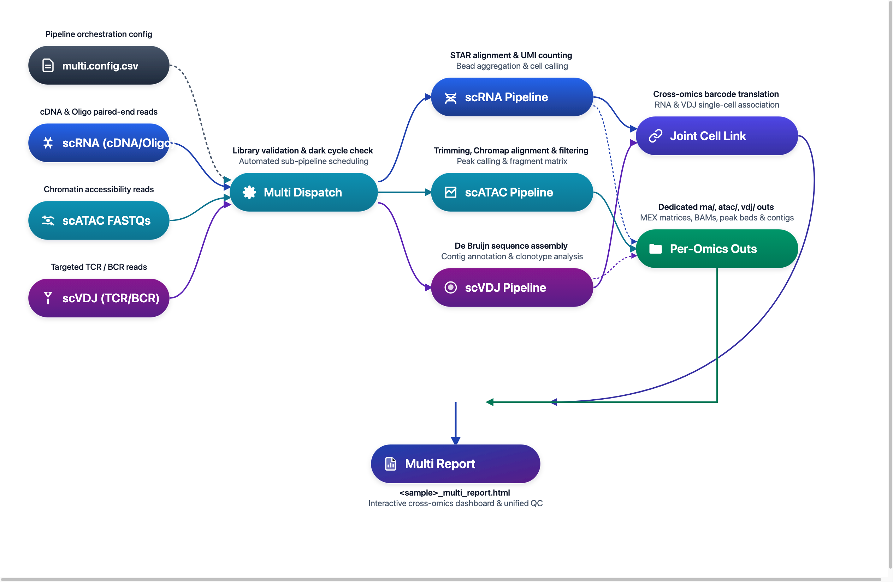

DNBelab C Series HT Multi-omics Analysis Pipeline¶
Single-Cell Multi-omics Integrated Analysis Guide
Overview ¶
The Multi-omics workflow unifies orchestration and generates combined reports; ATAC is analyzed independently and summarized, while RNA and VDJ support cell association analysis. A single configuration file coordinates all sub-pipelines and generates combined reports for cross-omics inspection.
Workflow: Configuration → Module Dispatch → Parallel Analysis → Status Aggregation → Combined Report

Usage Note:
$dnbc4toolsrepresents the executable path and should be replaced with your actual installation path. The backslash\is used to split commands across multiple lines for readability; commands can also be executed on a single line.
Key Features:
| Feature | Description |
|---|---|
| Unified Orchestration | One entry command dispatches multiple omics modules (RNA / ATAC / VDJ) |
| Status Tracking | Module-level status management (success / failed / skipped / reused) |
| Combined Report | Generates combined HTML report supporting cross-omics browsing and comparison |
| Flexible Configuration | Supports arbitrary module combinations (single / dual / all modules) |
Input Configuration ¶
Configuration File Structure¶
multi run uses a CSV configuration file to define module parameters and input data. Typical sections include:
| Section | Purpose | Key Parameters |
|---|---|---|
[rna] |
RNA analysis module configuration | genomeDir, expectcells, no_bam... |
[atac] |
ATAC analysis module configuration | genomeDir, frags_cutoff, need_bam... |
[vdj-t] |
T-cell VDJ analysis configuration | ref, beadstrans... |
[vdj-b] |
B-cell VDJ analysis configuration | ref, beadstrans... |
[libraries] |
Input data mapping (required) | fastqs, feature_types |
Detailed Configuration: Please refer to the Multi Parameter Documentation for complete CSV configuration specifications and parameter mappings.
[libraries]Input Directory Guidelines:
rna:fastqspoints to the RNA FASTQ root directory, which must containcDNA/andoligo/subdirectories.atac:fastqspoints to the FASTQ directory for the ATAC library, with paired R1/R2 files placed directly under it.vdj-t/vdj-b:fastqspoints to the TCR or BCR FASTQ library directory. TCR and BCR data must be configured separately.- File Pairing: The pipeline automatically pairs files based on
_R1/_R2or_R1_/_R2_naming patterns.
Configuration Examples¶
Scenario 1: RNA + VDJ (TCR / BCR) Joint Analysis (Recommended)
[rna]
genomeDir,/database/scRNA/Homo_sapiens
end5,true
no_bam,true
[vdj-t]
ref,human
[libraries]
fastqs,feature_types
/rawdata/multi_sample/rna,rna
/rawdata/multi_sample/tcr,vdj-t
Scenario 2: Full Multi-Omics (RNA + ATAC + VDJ) Analysis
[rna]
genomeDir,/database/scRNA/Homo_sapiens
end5,true
no_bam,true
[atac]
genomeDir,/database/scATAC/Homo_sapiens
[vdj-t]
ref,human
[vdj-b]
ref,human
[libraries]
fastqs,feature_types
/rawdata/multi_sample/rna,rna
/rawdata/multi_sample/atac,atac
/rawdata/multi_sample/tcr,vdj-t
/rawdata/multi_sample/bcr,vdj-b
Running Command¶
$dnbc4tools multi run \
--csv sample.csv \
--name demo \
--outdir /data/result \
--threads 20
Parameter Description:
| Parameter | Required | Description |
|---|---|---|
--csv |
Yes | Path to CSV configuration file |
--name |
Yes | Sample name for output directory naming |
--outdir |
No | Output directory, defaults to current directory ./ |
--threads |
No | Number of CPU threads, uses software default if not specified |
Pre-Run Checklist¶
Multi-Omics Pre-Run Verification Checklist
- Core Flags: Both
--csvconfiguration file path and--namesample identifier are supplied, and--outdiris writable. - Enabled Sections: The CSV file contains at least one active omics section (e.g.
[rna],[vdj-t],[atac]). - Data Path Mapping: Input paths in
[libraries]physically exist and accurately correspond tofeature_types(rna/atac/vdj-t/vdj-b). - Reference Readiness: Database paths (e.g.
genomeDir,ref) for all active modules are valid and version-compatible.
Main Pipeline ¶
Execution Flow¶
| Stage | Stage Name | Core Responsibility | Deliverable |
|---|---|---|---|
01 |
Config Parsing & QC | Parses CSV sections, verifies library paths, and detects dark reactions | Validated configuration |
02 |
Task Queue Building | Constructs the execution flow based on enabled modules and checks reuse flags | Scheduled task queue |
03 |
Sub-Pipeline Runs | Sequentially executes core alignments, bead merging, and cell calling (RNA/VDJ/ATAC) | Module output folders |
04 |
Status Aggregation | Captures exit codes, runtimes, and skip/reuse status across all modules | run_manifest.json |
05 |
Combined Reporting | Integrates cross-omics barcode translation (e.g. RNA-VDJ) into an interactive report | <sample>_multi_report.html |
Execution Highlights¶
Core Principles
- Multi handles "orchestration and aggregation"; module algorithms remain in each single-omics sub-pipeline.
- A module failure will not invalidate other completed modules but will be reflected in the final status summary.
Typical Runtime Log¶
====================================================================================================
Running checking libraries — 2026-11-02 16:43:37
====================================================================================================
✔ RNA Library check complete
✔ VDJ-T Library check complete
✔ VDJ-B Library check complete
✔ ATAC Library check complete
====================================================================================================
Running RNA pipeline — 2026-11-02 16:43:56
====================================================================================================
====================================================================================================
Parsed FASTQ Inputs - 2026-11-02 16:43:57
====================================================================================================
Type | Path
-------------+--------------------------------------------------------------------------------------
cDNA Read1 | /rawdata/multi_sample/rna/sample_cDNA_R1.fastq.gz
cDNA Read2 | /rawdata/multi_sample/rna/sample_cDNA_R2.fastq.gz
oligo Read1 | /rawdata/multi_sample/rna/sample_oligo_R1.fastq.gz
oligo Read2 | /rawdata/multi_sample/rna/sample_oligo_R2.fastq.gz
====================================================================================================
====================================================================================================
Chemistry Configuration - 2026-11-02 16:43:57
====================================================================================================
Type | Result
-------------+--------------------------------------------------------------------------------------
oligo | custom sequence structure
====================================================================================================
====================================================================================================
Chemistry Configuration - 2026-11-02 16:43:57
====================================================================================================
Type | Result
-------------+--------------------------------------------------------------------------------------
cDNA | custom sequence structure
====================================================================================================
2026-11-02 16:43:57 Validating RNA reference...
...done
2026-11-02 16:45:31 Starting oligo library filtering...
...done
2026-11-02 16:48:22 Starting cDNA library filtering...
...done
2026-11-02 16:53:07 Correcting RNA barcodes and preparing alignment inputs...
...done
2026-11-02 16:53:18 Performing read alignment and UMI counting...
...done
2026-11-02 16:58:42 Calculating bead similarity and merging beads within droplets...
...done
2026-11-02 16:58:49 Generating raw gene expression matrix...
...done
2026-11-02 16:59:12 Calling cells and generating filtered cell barcodes...
...done
2026-11-02 17:00:07 Generating cell-filtered gene expression matrix...
...done
2026-11-02 17:00:21 Calculating sequencing saturation metrics...
...done
2026-11-02 17:00:29 Generating per-barcode alignment and expression metrics...
...done
2026-11-02 17:00:40 Generating position-sorted BAM file...
...done
2026-11-02 17:01:58 Performing dimensionality reduction and clustering analysis...
...done
2026-11-02 17:02:23 Analysis Finished. Elapsed Time: 0:18:26
✔ Generated RNA intermediate report
====================================================================================================
Running ATAC pipeline — 2026-11-02 17:02:34
====================================================================================================
====================================================================================================
Parsed FASTQ Inputs - 2026-11-02 17:02:35
====================================================================================================
Type | Path
-------------+--------------------------------------------------------------------------------------
Read1 | /rawdata/multi_sample/atac/sample_atac_R1.fastq.gz
Read2 | /rawdata/multi_sample/atac/sample_atac_R2.fastq.gz
====================================================================================================
====================================================================================================
Chemistry Configuration - 2026-11-02 17:02:35
====================================================================================================
Type | Result
-------------+--------------------------------------------------------------------------------------
ATAC | custom sequence structure
====================================================================================================
2026-11-02 17:02:35 Validating ATAC reference...
...done
2026-11-02 17:02:41 Performing raw data quality control and alignment...
...done
2026-11-02 17:11:32 Calculating bead similarity and merging beads within droplets...
...done
2026-11-02 17:14:39 Processing fragments for peak calling...
...done
2026-11-02 17:22:30 Generating raw peak count matrix...
...done
2026-11-02 17:24:06 Calling cells for ATAC data...
...done
2026-11-02 17:25:27 Generating cell-filtered peak count matrix...
...done
2026-11-02 17:25:45 Generating filtered fragments and TSS enrichment...
...done
2026-11-02 17:26:17 Calculating sequencing saturation metrics...
...done
2026-11-02 17:27:16 Performing dimensionality reduction and clustering...
...done
2026-11-02 17:28:48 Analysis Finished. Elapsed Time: 0:26:13
✔ Generated ATAC intermediate report
====================================================================================================
Running VDJ-T pipeline — 2026-11-02 17:29:11
====================================================================================================
====================================================================================================
Parsed FASTQ Inputs - 2026-11-02 17:29:12
====================================================================================================
Type | Path
-------------+--------------------------------------------------------------------------------------
Read1 | /rawdata/multi_sample/tcr/sample_tcr_R1.fastq.gz
Read2 | /rawdata/multi_sample/tcr/sample_tcr_R2.fastq.gz
====================================================================================================
====================================================================================================
Chemistry Configuration - 2026-11-02 17:29:12
====================================================================================================
Type | Result
-------------+--------------------------------------------------------------------------------------
VDJ | custom sequence structure
====================================================================================================
2026-11-02 17:29:12 Validating VDJ reference...
...done
2026-11-02 17:29:13 Starting VDJ library filtering...
...done
2026-11-02 17:33:57 Correcting VDJ barcodes and translating bead identities...
...done
2026-11-02 17:34:14 Preparing input data for VDJ assembly...
...done
2026-11-02 17:38:09 Performing VDJ sequence assembly and gene segment annotation...
...done
2026-11-02 17:58:52 Performing cell calling for VDJ data...
...done
2026-11-02 17:59:38 Generating VDJ clonotype analysis...
...done
2026-11-02 18:00:09 Converting VDJ results from cellbarcode to cell ID...
...done
2026-11-02 18:00:10 Analysis Finished. Elapsed Time: 0:30:57
✔ Generated VDJ-T intermediate report
====================================================================================================
Running VDJ-B pipeline — 2026-11-02 18:00:13
====================================================================================================
====================================================================================================
Parsed FASTQ Inputs - 2026-11-02 18:00:13
====================================================================================================
Type | Path
-------------+--------------------------------------------------------------------------------------
Read1 | /rawdata/multi_sample/bcr/sample_bcr_R1.fastq.gz
Read2 | /rawdata/multi_sample/bcr/sample_bcr_R2.fastq.gz
====================================================================================================
====================================================================================================
Chemistry Configuration - 2026-11-02 18:00:14
====================================================================================================
Type | Result
-------------+--------------------------------------------------------------------------------------
VDJ | custom sequence structure
====================================================================================================
2026-11-02 18:00:14 Validating VDJ reference...
...done
2026-11-02 18:00:14 Starting VDJ library filtering...
...done
2026-11-02 18:03:46 Correcting VDJ barcodes and translating bead identities...
...done
2026-11-02 18:04:06 Preparing input data for VDJ assembly...
...done
2026-11-02 18:07:16 Performing VDJ sequence assembly and gene segment annotation...
...done
2026-11-02 18:26:09 Performing cell calling for VDJ data...
...done
2026-11-02 18:27:36 Generating VDJ clonotype analysis...
...done
2026-11-02 18:28:30 Converting VDJ results from cellbarcode to cell ID...
...done
2026-11-02 18:28:31 Analysis Finished. Elapsed Time: 0:28:17
✔ Generated VDJ-B intermediate report
====================================================================================================
Running combined report generation — 2026-11-02 18:28:34
====================================================================================================
Combined report sections:
✔ rna: success
✔ atac: success
✔ vdj-t: success
✔ vdj-b: success
✔ Outputs organized in /data/result/demo/outs
Analysis finished successfully!
Note: C6 Multiplexed RNA Pipeline
The C6 multiplexed single-cell RNA analysis pipeline has been moved to its own dedicated chapter. Please refer to the C6 Pipeline Guide.
Results ¶
Output Directory Structure¶
After completion, results are organized under <outdir>/<name>/:
<outdir>/<name>/
├── outs/ # Organized output results
│ ├── <sample>_multi_report.html # Multi-omics combined report
│ ├── rna/ # RNA results (if enabled)
│ ├── atac/ # ATAC results (if enabled)
│ ├── vdj-t/ # VDJ-T results (if enabled)
│ └── vdj-b/ # VDJ-B results (if enabled)
├── logs/ # Logs and runtime status
│ ├── run_manifest.json # Module runtime status summary
│ └── *.log # Module runtime logs
├── RNA_ANALYSIS_WORKFLOW_PROCESSING/ # Module workflow directories (if enabled)
├── ATAC_ANALYSIS_WORKFLOW_PROCESSING/
├── VDJ-T_ANALYSIS_WORKFLOW_PROCESSING/
└── VDJ-B_ANALYSIS_WORKFLOW_PROCESSING/
Key Output Files¶
| File/Directory | Description |
|---|---|
outs/<sample>_multi_report.html |
Multi-omics combined report displaying core QC and analysis charts from all modules |
outs/rna/ |
RNA module standard outputs (matrix, statistics, module report, etc.) |
outs/atac/ |
ATAC module standard outputs (fragment files, peaks, module report, etc.) |
outs/vdj-t/ / outs/vdj-b/ |
VDJ module standard outputs (clonotypes, annotations, module report, etc.) |
logs/run_manifest.json |
Module runtime status summary including return codes, runtime, and reuse status |
Detailed Output Description: Please refer to the Multi Output Documentation for detailed interpretation of the combined report.